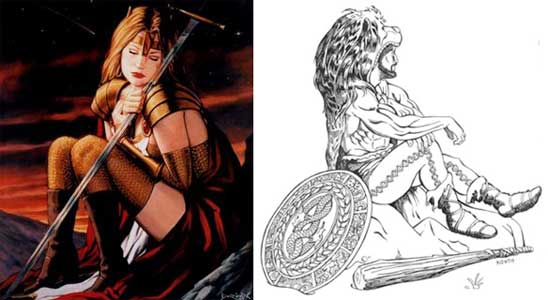

I PUNTI FATICA
Nel corso delle avventure e della battaglie i personaggi accumulano fatica e stanchezza fisica. Per simulare lo stato di affaticamento conseguente al compimento di determinate azioni il personaggio accumulerà punti fatica.
I punti fatica sono accumulati per
il compimento delle seguenti attività fisiche:
1 punto fatica per ogni round di combattimento
effettuato;
1 punto fatica per ogni ora di cammino effettuata
oltre le regolari 12 ore di marcia giornaliere;
1 punto fatica per ogni ora di cammino effettuato con un ingombro tale da
ridurre il fattore movimento del personaggio alla metà del normale od ad un
valore inferiore (questa fatica si cumula con l'ipotesi precedente);
1 punto fatica per ogni round di scalare pareti
effettuato;
2 punti fatica qualora si effettui la manovra di
combattimento della carica;
2 punti fatica per ogni ora di sonno inferiore alle
otto ore, non effettuata dal personaggio nell'arco delle 24 ore (si noti
che questi punti fatica saranno accumulati interamente al termine delle 24 ore
di attività del personaggio e potranno essere recuperati solo se il personaggio
si riposi dormendo);
Ammontare variabile di punti fatica, come fissato
dal Dungeon Master, per il compimento di ogni attività fisica considerata da
quest'ultimo stancante.
Si tenga presente che normalmente non farà accumulare punti fatica il lancio degli incantesimi ed il mantenimento della concentrazione. Ciò a meno che l'utente di magia non debba effettuare una vera azione di combattimento perché l'incantesimo abbia effetto. A tale fine non saranno considerati incantesimi che richiedono un'azione di combattimento le magie a tocco od a distanza per il cui effetto gli utenti di magia dovranno cercare di colpire un loro avversario (si pensi alla magia clericale Cause Light Wounds oppure all'incantesimo dei maghi Shocking Grasp). Saranno considerati, invece, incantesimi che richiedono un'azione di combattimento le magie che permettono all'utente di magia di utilizzare in combattimento armi create magicamente (si pensi alla magia clericale Flame Blade oppure all'incantesimo dei maghi Drainor’s Darkstaff). In questi casi gli utenti di magia accumuleranno 1 punto fatica per ogni round di combattimento effettuato.
Una volta accumulato un certo ammontare di punti fatica il personaggio sarà considerato affaticato e, quindi, subirà delle penalità fino a quando riposandosi non eliminerà un ammontare di punti fatica tale da scendere sotto la soglia dell'affaticamento.

LE SOGLIE DI AFFATICAMENTO
La prima soglia di affaticamento, ossia il punteggio di punti fatica accumulati in grado di imporre al personaggio la prima penalità per la stanchezza, non è uguale per tutti i personaggi ma può essere calcolata in tenendo presente il punteggio di costituzione del personaggio secondo la seguente tabella:
| PUNTEGGIO DI COSTITUZIONE | PUNTI FATICA |
| 3 o - | 1 punti fatica |
| 4 - 6 | 2 punti fatica |
| 7 - 8 | 3 punti fatica |
| 9 - 11 | 4 punti fatica |
| 12 - 14 | 5 punti fatica |
| 15 | 6 punti fatica |
| 16 | 7 punti fatica |
| 17 | 8 punti fatica |
| 18 | 9 punti fatica |
| 19 o + | 10 punti fatica |
A tale punteggio base andrà aggiunto il bonus dovuto alla macro-classe di appartenenza del personaggio:
| MACRO-CLASSE | PUNTI FATICA |
| Wizard | 0 punti fatica |
| Rogue | +1 punto fatica bonus |
| Cleric | +2 punti fatica bonus |
| Warrior | +3 punti fatica bonus |
Le successive soglie di affaticamento, si raggiungeranno ogni volta che saranno accumulati 5 punti fatica ulteriori rispetto a quelli necessari a raggiungere la prima soglia di affaticamento. Al raggiungimento della nona soglia di affaticamento il personaggio si considererà stremato e non accumulerà più alcun punto fatica.
Per fare un esempio si consideri che un fighter con 12 di costituzione raggiungerà la prima soglia di affaticamento una volta accumulati 8 punti fatica, la seconda soglia una volta accumulati 13 punti fatica, la terza soglia una volta accumulati 18 punti fatica e così via...
Al raggiungimento di ogni soglia (o grado) di affaticamento corrisponderanno determinate penalità come espresse nella successiva tabella:
| AFFATICAMENTO | EFFETTI DELL'AFFATICAMENTO |
| 1° grado di affaticamento | 10% di fallire nel lancio delle magie, -1 ai tiri per colpire |
| 2° grado di affaticamento | 20% di fallire nel lancio delle magie, -1 ai tiri per colpire, -1 ai tiri per i danni |
| 3° grado di affaticamento | 30% di fallire nel lancio delle magie, -1 ai tiri per colpire, -1 ai tiri per i danni, +1 alla classe armatura |
| 4° grado di affaticamento | 40% di fallire nel lancio delle magie, -2 ai tiri per colpire, -1 ai tiri per i danni, +1 alla classe armatura |
| 5° grado di affaticamento | 50% di fallire nel lancio delle magie, -2 ai tiri per colpire, -2 ai tiri per i danni, +1 alla classe armatura |
| 6° grado di affaticamento | 60% di fallire nel lancio delle magie, -2 ai tiri per colpire, -2 ai tiri per i danni, +2 alla classe armatura |
| 7° grado di affaticamento | 70% di fallire nel lancio delle magie, -3 ai tiri per colpire, -2 ai tiri per i danni, +2 alla classe armatura |
| 8° grado di affaticamento | 80% di fallire nel lancio delle magie, -3 ai tiri per colpire, -3 ai tiri per i danni, +2 alla classe armatura |
| 9° grado di affaticamento | 90% di fallire nel lancio delle magie, -3 ai tiri per colpire, -3 ai tiri per i danni, +3 alla classe armatura |
Fallire nel lancio delle magie: questa percentuale di fallimento non si applica soltanto in caso di lancio diretto di incantesimi da parte di utenti di magia ma anche in caso di utilizzo di poteri speciali nonché di oggetti magici per l'attivazione dei quali (nonostante non sia richiesta la concentrazione) il personaggio deve pronunciare parole od effettuare movimenti assimilabili ai componenti verbali e somatici degli incantesimi (si pensi all'utilizzo di pergamene magiche, all'utilizzo di bacchette magiche, ecc...). Si noti, inoltre, che questa percentuale non si cumula con altre percentuali applicabili al lancio delle magie dovute a fattori diversi (si pensi alle difficoltà visive oppure alle penalità dovute a situazioni particolari di combattimento). Ognuna di queste diverse percentuali, infatti, va verificata con un apposito e separato tiro di dado. Se la percentuale si verifica l'incantesimo (il potere o l'oggetto magico) si considererà utilizzato ma automaticamente fallito con eventuale dispendio di punti preghiera, punti magia, componenti materiali e cariche magiche.
ELIMINARE I PUNTI FATICA
Perchè un personaggio possa
eliminare i punti fatica accumulati occorre che lo stesso si riposi. Esistono
due forme di riposo: il riposo regolare ed il riposo totale.
Per ogni ora di riposo regolare il personaggio
eliminerà 1 punto fatica fino ad allora
accumulato; per ogni ora di riposo totale il
personaggio eliminerà 3 punti fatica fino ad
allora accumulato. Per determinare il tipo di riposo che effettua il personaggio
si consideri che:
Per trascorrere un'ora in stato di
riposo regolare occorre che il personaggio:
*Non effettui alcuna azione stancante (ossia un'azione che preveda l'accumulo di
almeno un punto fatica).
*Non stia soffrendo per prolungato digiuno o per disidratazione.
*Non effettui il lancio di alcun incantesimo, né utilizzi alcun potere speciale
od oggetto magico per l'attivazione dei quali (nonostante non sia richiesta la
concentrazione) il personaggio deve pronunciare parole od effettuare movimenti
assimilabili ai componenti verbali e somatici degli incantesimi.
*Non utilizzi alcuna competenza non relativa alle armi.
*Trascorra tale periodo in posizione relativamente comodità, senza effettuare
attività complesse che richiedono sforzo od attenzione particolare per essere
compiute. In particolare,
potranno ritenersi compatibili con una situazione di riposo regolare le seguenti
attività: camminare tranquillamente lungo un sentiero, cavalcare in pianura o
lungo una strada battuta, effettuare comodamente un turno di guardia.
Non saranno considerate, invece, compatibili con una
situazione di riposo regolare le seguenti attività: camminare senza seguire
comodamente un sentiero, cavalcare in zone impervie (foreste, colline, montagne)
e/o fuori da strade battute, effettuare una qualsiasi attività lavorativa,
effettuare una qualsiasi attività di studio o di ricerca.
Per trascorrere un'ora in stato di
riposo totale, invece, occorre che il
personaggio rispetti le previsioni del riposo regolare ed inoltre:
*Disponga di cibo e bevande tali che da poter essere considerato ben nutrito ed
idratato.
*Disponga di un comodo giaciglio o, comunque, di una posizione sulla quale
adagiarsi che possa considerarsi per lo stesso comoda (si pensi ad un comodo
letto).
*Possa riposare in un luogo chiuso, lontano dalle intemperie, senza soffrire né
il freddo né il caldo (per tale motivo si consideri nella normalità dei casi che
un personaggio che si riposi all'agghiaccio senza il riparo almeno di una tenda,
il calore di un fuoco e la comodità di un sacco a pelo, non potrà effettuare
riposo totale ma solo riposo regolare).
*Non effettui alcun tipo di attività se non quella di dedicarsi completamente al
riposo.
Si noti che il sonno inteso come trascorrere alcune ore della giornata dormendo è uno stato compatibile con il riposo ma da questo differente. Si consideri, infatti, che un personaggio comune necessita di almeno 8 ore di sonno nell'arco delle 24 ore di ogni giornata. Il personaggio può dormire sia in situazioni considerabili di riposo regolare che di riposo totale. Qualora un personaggio dorma per un numero di ore inferiore alle otto nell'arco di un'intera giornata lo stesso accumulerà 2 punti fatica per ogni ora di sonno mancante (questi punti fatica saranno accumulati tutti insieme al termine delle 24 ore di attività del personaggio). A differenza dei punti fatica accumulati con ogni altra tipologia di attività, questi punti fatica potranno essere recuperati (e saranno recuperati per primi) solo allorquando il personaggio effettui riposo (regolare o totale) dormendo.